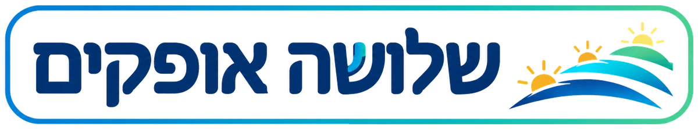

מסתכלים על אותו נושא בשלושה אופקים בבת אחת: מה שיש היום ומתחיל לדעוך, העתיד שאנחנו רוצים בו וכבר רואים ממנו זרעים, והמעבר שמחבר ביניהם. כך מחליטים ממה להיפרד, מה לשמור ובמה להשקיע.
אין כרגע חיבור לבינה המלאכותית. בינתיים אפשר לעיין בדוגמה ולמלא ידנית.
כדאי למלא לפי הסדר: קודם אופק 1 (מה יש היום), אחר כך אופק 3 (העתיד הרצוי), ורק בסוף אופק 2 (המעבר ביניהם). בכל אופק אפשר להוסיף ידנית או לבקש הצעות מה־AI.
הדרך שבה הדברים עובדים עכשיו. חלק מזה כבר לא מתאים לעתיד ומתחיל לדעוך, וחלק חשוב לשמור.
איך ייראו הדברים כשהם יעבדו כמו שאנחנו רוצים. וגם זרעים: דוגמאות קטנות לעתיד הזה שכבר קיימות היום, אצלנו או במקום אחר.
חידושים, ניסיונות ושינויים שקורים בדרך. חלקם מקרבים אותנו לאופק 3 (+), וחלקם רק מאריכים את החיים של אופק 1 (−). חשוב לדעת להבדיל.
שלושת הקווים מראים איך כל אופק מתחזק או נחלש לאורך הזמן, מהיום (בצד ימין) ועד שנת היעד (בצד שמאל). אופק 1 דועך, אופק 3 צומח, ואופק 2 הוא הגל של המעבר ביניהם.
ה־AI קורא את שלושת האופקים ומציע ממה להיפרד בהדרגה, מה לשמור, במה להשקיע ולמה להיזהר. אחר כך אפשר להעביר את העתיד הרצוי לכלי ״מהחזון להיום״ ולבנות ממנו מפת דרכים.